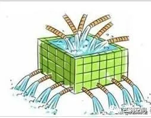

大水漫灌，我以前是对这种说法嗤之以鼻的，觉得是很没有意思的比喻。
我错了。

第一种：人作为流量
不单网络流量这样的可以用水来比喻，金钱可以，人也可以。
在统计数字里，人是可以像水一样的，在一个又一个的池子里，倒来倒去。
我们无法避免自己水分子的命运，但不要总是被人倒来倒去。我要自己走路。
第二种：人承接流量
古人逐水建城，逐水草而居。今人逐「流量」而活。水灌溉了庄稼，养活了牲畜，人才能活。在工业化之后，人脱离了土地，开始依靠劳动来换取面包，开始依靠半可见的「水」，有的人叫它资源，有的人说就是金钱。这里不做细究，金钱也好，资源也罢，都呈现出了流量的特点，而占据这个流量的主导权，就有更大的生存空间。
山头
有流量的比喻，山头的比喻也就合理化了。占山为王，占山为寇，都是一致的。水流依山形汇聚成溪河湖江。占据一片山头则对河流拥有了控制权。截断溪流，围堰筑坝，一片水库可以形成一片小的绿洲生态。水库具有储备功能。这一切在现实世界中也是类似的，开一家公司，或者成为某个机构的负责人，掌握流经这个组织/流域的所有资源、信息的控制权。职员、雇工，就是讨水的农户。
组织的形态
组织的要义是可以组织一堆人，为了一个目的而活动。组织的首要目的的维系组织的续存。掌握流量的组织可以依托流量开展各类活动。有掌握干流的大组织，有掌握支流的小组织。有的依靠分流存活，则依附于上游。有的只能依靠下游形成活水，则和干流相敬如宾，最后可能也会被合并。有专业的管理人员，不人身依附于任何一个组织，在各个组织之间辗转，待价而沽出售自己的专业技能。有实力不足的组织，最后被大的组织吞并，形成流量的整合。也可能不整合，只是形成水系调水，稍微互补。也有浪人，在组织的缝隙间存活。缝隙足够大，则可活，被组织挤压则不可活。
地头蛇
百川东到海，有大流域有小流域，只要流域独立，即可活。不必羡慕大江大河，做好小流域的管理，做个地头蛇，有何不可。
现今的游牧民
有人想要脱离流域的控制，不受组织的压力。实则是远程服务于远方的地头蛇，只要挑水客的桶不空，组织又不设卡严防，可活。或者做个挑水客，掮客，可活。
或是在大流域里自建小鱼塘，服务乡里乡亲。有助于大流域稳定和发展，且不冲击大流域的水源的，可活。甚至坐大成为地头蛇。